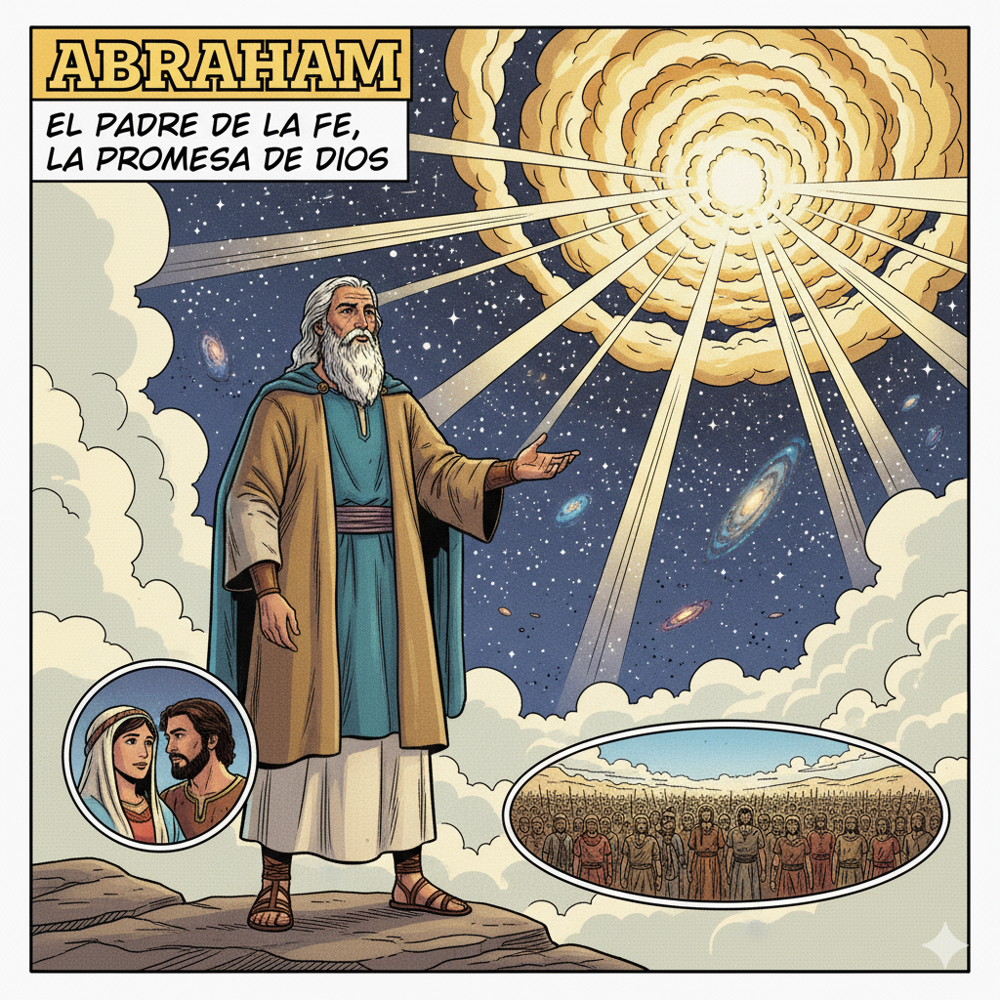

Padre de la fe
Abraham vivía en Ur de los caldeos, una ciudad próspera de Mesopotamia, cuando Dios lo llamó para emprender un viaje extraordinario hacia una tierra desconocida. Aunque no sabía exactamente adónde lo llevaba Dios, Abraham obedeció inmediatamente porque confiaba plenamente en la palabra del Señor.
Dios le hizo una promesa increíble: sería padre de una gran nación y todas las familias de la tierra serían bendecidas a través de él. Esta promesa parecía imposible porque Abraham y Sara eran muy ancianos y no tenían hijos. Sin embargo, Abraham creyó en la promesa divina y esperó con paciencia y fe.
Durante su viaje, Abraham demostró su fe de muchas maneras. Construyó altares para adorar a Dios, protegió a su familia, y siempre buscó hacer la voluntad del Señor. Su fe fue puesta a prueba en varias ocasiones, pero nunca dudó del amor y la fidelidad de Dios.
Cuando finalmente nació Isaac, Abraham vio cumplida la promesa de Dios. Su fe fue tan grande y constante que Dios lo llamó "mi amigo" y se convirtió en padre espiritual de todos los creyentes. Abraham nos enseña que la fe verdadera significa confiar en Dios incluso cuando no entendemos completamente sus planes.
La historia de Abraham nos muestra que Dios siempre cumple sus promesas, aunque a veces tengamos que esperar y confiar en su tiempo perfecto.
Materiales: Papel, lápices de colores, pegatinas de estrellas
Instrucciones:
Reflexión: Como Abraham siguió a Dios sin saber exactamente adónde iba, nosotros también podemos confiar en que Dios nos guía en nuestro camino de fe.
Mensaje principal: Abraham nos enseña que la fe verdadera significa confiar en Dios aunque no entendamos todo su plan. Su obediencia y paciencia nos muestran que Dios siempre cumple sus promesas en el momento perfecto.